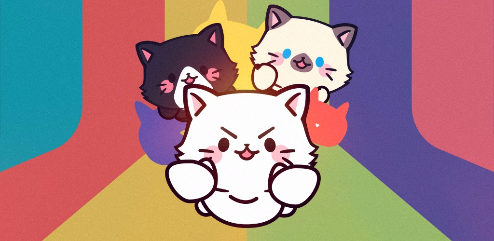

Geneticats
Geneticats é um Jogo Educacional voltado a facilitar o aprendizado dos conteúdos de Genética da Biologia do ensino médio. O aplicativo apresenta os conteúdos de forma lúdica, atrávés de simulação de cruzamento entre gatinhos, podendo o usuário ver as características sendo passadas hereditáriamente e aprender o papel dos genes nesse processo.
O aplicativo foi desenvolvido para o Projeto de Pesquisa Ask Biology, realizado no IFRN - Campus Parnamirim. O Ask Biology visou a construção de aplicações que auxiliasse no ensino de Biologia.
O projeto foi desenvolvido na linguagem C#, tendo o Unity como engine de desenvolvimento. O jogo foi pensado para a plataforma mobile, sendo lançado na Playstore em novembro de 2018.
O geneticats teve um artigo publicado pela SBGames 2018 no formato de short paper, que foi exposto no evento em Foz do Iguaçu entre 29 de Outubro e 01 de Novembro de 2018.
Para obter maiores informações sobre o Aplicativo, você pode acessar o artigo publicado aqui
O Geneticats foi também apresentado como oficina no Genetica na Praia, que fez parte do Engene 2018. A oficina aconteceu no dia 28 de Novembro de 2018, em Natal/RN.
Participantes do Projeto
Desenvolvimento
- Arthur Robinson de Oliveira Madureira
- João Gabriel Reis Saraiva de Andrade
- Rodrigo Gomes da Rocha
Design
- Luan Messias da Silveira
Conceituação das fases
- João Gabriel Carvalho Coelho Cirne
Orientação
- Ariadne Sarynne Barbosa de Lima
- Givanaldo Rocha de Souza
- Thayse Azevedo da Silva